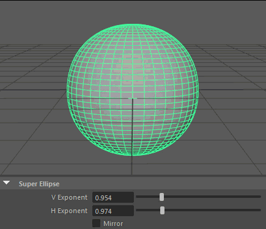

超形状是基于立方体和球体的基本体，能够创建复杂的有机形状。但是，由于这些形状具备高度精确的特性，因此建议使用默认值创建基础形状，然后在关联的 superShape 节点中试用“随机”(Random)按钮，从而获得接近所需的形状。然后，可以使用“属性编辑器”(Attribute Editor)调整该形状。
每次创建超形状基本体时，便会创建一个 polySuperShape 节点。
- 形状(Shape)
- 确定基础形状。选项包括“超椭圆”(Super Ellipse)、“球形谐波”(Spherical Harmonics)和 Ultra。
- 半径(Radius)
- 根据从基本体中心到极点的距离确定基本体的大小。
- 水平分割(Horizontal Divisions)、垂直分割(Vertical Divisions)
- 基础网格上的水平和垂直细分数（每象限）。
- 创建 UV (Create UVs)
- 确定如何为基本体创建默认 UV。选项包括“无”(None)、“已收缩到极点”(Pinched at Pole)和“极点处的锯齿形”(Sawtooth at Pole)。
- 随机(Random)
- 使用随机属性生成当前“形状”(Shape)的基本体。有助于快速创建所需的起始点。
- 重置(Reset)
- 重新将所有属性设置为所选“形状”(Shape)的默认值。
螺旋线(Helix)
此部分对于所有超形状均相同，且允许在应用各自的超形状特性之前使几何体成螺旋形状。
- 合并顶点(Merge Vertices)
- 合并螺旋线两端的顶点。如果启用，则“螺旋线”(Helix)的其余属性不会起任何作用。
- 水平旋转(Horizontal Revolutions)
- 确定螺旋数。
- 垂直旋转(Vertical Revolutions)
- 确定圈的完整度。
- 竖直偏移(Vertical Offset)
- 确定圈的拉伸。
- 内部半径(Internal Radius)
- 确定内圈的直径。
- X 偏移(X Offset)、Z 偏移(Z Offset)
- 在相应方向上偏移圈的缩放。
超椭圆(Super Ellipse)
“超椭圆”(Super Ellipse)使用沿 x 和 y 的指数方程式生成基本体，沿每个轴生成弧或反弧。
此部分包含特定于“超椭圆”(Super Ellipse) “形状”(Shape)的属性。
- V 指数(V Exponent)
- 控制用于计算沿垂直轴的抛物线弧的指数。
- H 指数(H Exponent)
-
控制用于计算沿水平轴的抛物线弧的指数。
- 镜像(Mirror)
- 强制“H 指数”(H Exponent)匹配“V 指数”(V Exponent)。
Spherical Harmonics
“球形谐波”(Spherical Harmonics)将一系列频率方程式应用于球体的曲面，从而生成脉冲拓扑。
此部分包含特定于“球形谐波”(Spherical Harmonics) “形状”(Shape)的属性。
- V 倍增(V multiplier)、V 指数(V exponent)
-
控制用于沿垂直轴确定形状的数学变量。

- H 倍增(H multiplier)、H 指数(H exponent)
-
控制用于沿水平轴确定形状的数学变量。

Ultra
此部分包含特定于 “Ultra 形状”(Ultra Shape)的选项。“Ultra 形状”(Ultra Shape)使用专为创建有机体形状而设计的算法。
水平
控制跨 Ultra 形状纬度的图案。
- 倍增 1(Multiplier 1)、倍增 2(Multiplier 2)
- 控制 Ultra 形状的主要水平凸起。这两个值均可以同时存在于 Ultra 形状上，您可以使用“混合器”(Mixer)属性融合二者。
- 指数 1(Exponent 1)、指数 2(Exponent 2)、指数 3(Exponent 3)、指数 4(Exponent 4)
-
分别控制“倍增 1”(Multiplier 1)（“指数 1”(Exponent 1)和 2）以及“倍增 2”(Multiplier 2)（“指数 3”(Exponent 3)和 4）的水平挤出范围。

- 指数 5(Exponent 5)
- 控制由先前的“倍增”(Multipliers)和“指数”(Exponents)生成的水平凸起的总体范围。
垂直
控制跨 Ultra 形状经度的图案。
- 倍增 1(Multiplier 1)、倍增 2(Multiplier 2)
- 控制 Ultra 形状的主要垂直凸起。这两个值均可以同时存在于 Ultra 形状上，您可以使用“混合器”(Mixer)属性融合二者。
- 指数 1(Exponent 1)、指数 2(Exponent 2)、指数 3(Exponent 3)、指数 4(Exponent 4)
-
分别控制“倍增 1”(Multiplier 1)（“指数 1”(Exponent 1)和 2）以及“倍增 2”(Multiplier 2)（“指数 3”(Exponent 3)和 4）的垂直挤出范围。

- 指数 5(Exponent 5)
- 控制由先前的“倍增”(Multipliers)和“指数”(Exponents)生成的垂直凸起的总体范围。